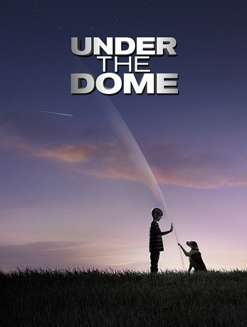

")
 
 IMDB-Wertung: 6.7 / 10
IMDB-Wertung: 6.7 / 10  Metascore:
Metascore: 
Ein Dröhnen erschüttert die Kleinstadt Chester's Mill. Ein Sturm zieht auf. Eine unsichtbare Klinge teilt eine Kuh in zwei Hälften. Ein Lastwagen knallt gegen eine unsichtbare Wand. Ein Flugzeug explodiert am Himmel. Die Erde bebt. Panik! Was stürzt auf einmal alles ins Chaos? Ein terroristischer Akt? Eine Strafe Gottes? Oder eine geheime Operation der Regierung? Schließlich entdecken die Bewohner, dass sie durch eine riesige Kuppel komplett von der Außenwelt isoliert sind ...
verschieben zu "X:\Person\Stephen King"
Jahr: 2013
Dauer: 40 Minuten
FSK: 16
Land: USA Studio: CBSTonspuren: DD5.1 - ,
Untertitel: Deutsch, Englisch,
Auflösung: 720p (1280x720) Größe: 2304 MB
Genre: Thriller, Drama, Sci-Fi, Mystery, TV-Serie
Regisseur: Jack Bender, Peter Leto, David Barrett, Sergio Mimica-Gezzan, Kari Skogland,  Eriq La Salle, Edward Ornelas,
Eriq La Salle, Edward Ornelas,  Peter Weller,
Peter Weller,  Roxann Dawson, Paul A. Edwards, Niels Arden Oplev, Miguel Sapochnik, Holly Dale, Ernest R. Dickerson, Dennie Gordon, Sam Hill, Olatunde Osunsanmi, P.J. Pesce, Lee Rose
Roxann Dawson, Paul A. Edwards, Niels Arden Oplev, Miguel Sapochnik, Holly Dale, Ernest R. Dickerson, Dennie Gordon, Sam Hill, Olatunde Osunsanmi, P.J. Pesce, Lee Rose
Drehbuch: Brian K. Vaughan
Soundtrack:
Darsteller:
 Mike Vogel als Dale 'Barbie' Barbara
Mike Vogel als Dale 'Barbie' Barbara Rachelle Lefevre als Julia Shumway
Rachelle Lefevre als Julia Shumway Colin Ford als Joe McAlister
Colin Ford als Joe McAlister Dean Norris als James 'Big Jim' Rennie
Dean Norris als James 'Big Jim' Rennie Aisha Hinds als Carolyn Hill
Aisha Hinds als Carolyn Hill Britt Robertson als Angie McAlister
Britt Robertson als Angie McAlister Natalie Martinez als Linda Esquivel
Natalie Martinez als Linda Esquivel Dale Raoul als Andrea Grinnell
Dale Raoul als Andrea Grinnell Marg Helgenberger als Christine Price
Marg Helgenberger als Christine Price Sherry Stringfield als Pauline Rennie
Sherry Stringfield als Pauline Rennie Samantha Mathis als Dr. Alice Calvert
Samantha Mathis als Dr. Alice Calvert Dwight Yoakam als Lyle Chumley
Dwight Yoakam als Lyle Chumley Brett Cullen als Don Barbara
Brett Cullen als Don Barbara Gia Mantegna als Lily Walters
Gia Mantegna als Lily Walters Eriq La Salle als Hektor Martin
Eriq La Salle als Hektor Martin Leon Rippy als Ollie Dinsmore
Leon Rippy als Ollie Dinsmore Ned Bellamy als Reverend Lester Coggins
Ned Bellamy als Reverend Lester Coggins Shane Callahan als Roger Lopez
Shane Callahan als Roger Lopez Frank Whaley als Dr. Marston
Frank Whaley als Dr. Marston Jeff Fahey als Sheriff Howard 'Duke' Perkins
Jeff Fahey als Sheriff Howard 'Duke' Perkins Kevin Sizemore als Paul Randolph
Kevin Sizemore als Paul Randolph Mare Winningham als Agatha Seagrave
Mare Winningham als Agatha Seagrave Michael Tourek als Wendell
Michael Tourek als Wendell Paul McCrane als Patrick Walters
Paul McCrane als Patrick Walters Rey Hernandez als Otto
Rey Hernandez als OttoDatei: X:\HD-Serien\Under the Dome\S01\Under the Dome S01E01 Chesters Mill.mkv seit 12.09.2017
Festplatte: HD Serien(SU-Z)+Dokus+Musik
 Es gibt insgesamt 182 Filme in der Gruppe 'HD-Serien'
Es gibt insgesamt 182 Filme in der Gruppe 'HD-Serien'